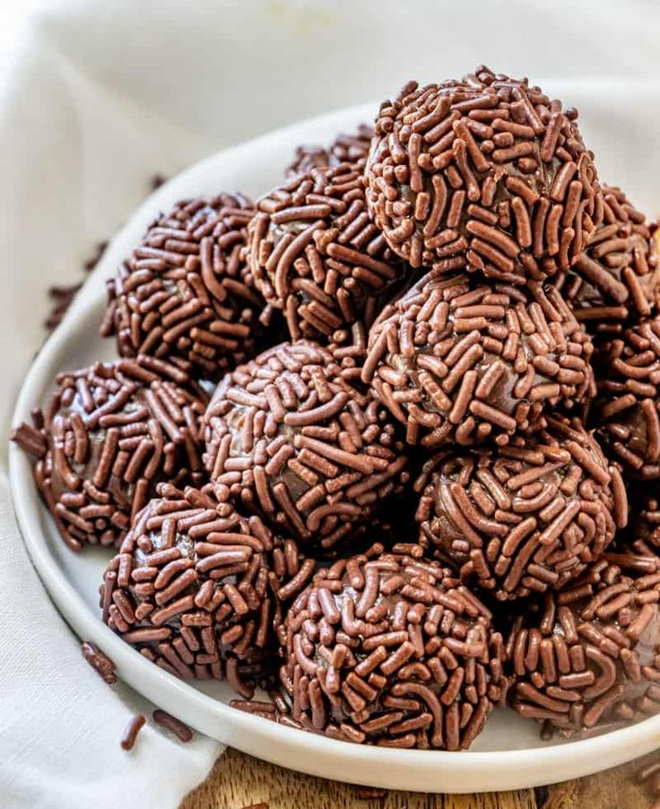

Coxinha : La coxinha est une spécialité salée brésilienne en forme de goutte, composée d’une pâte croustillante à l’extérieur et garnie de poulet tendre et savoureux à l’intérieur.

Brigadeiro : Le brigadeiro est une délicieuse spécialité brésilienne sucrée, préparée avec du lait concentré, du chocolat et du beurre, puis roulée dans des vermicelles de chocolat.